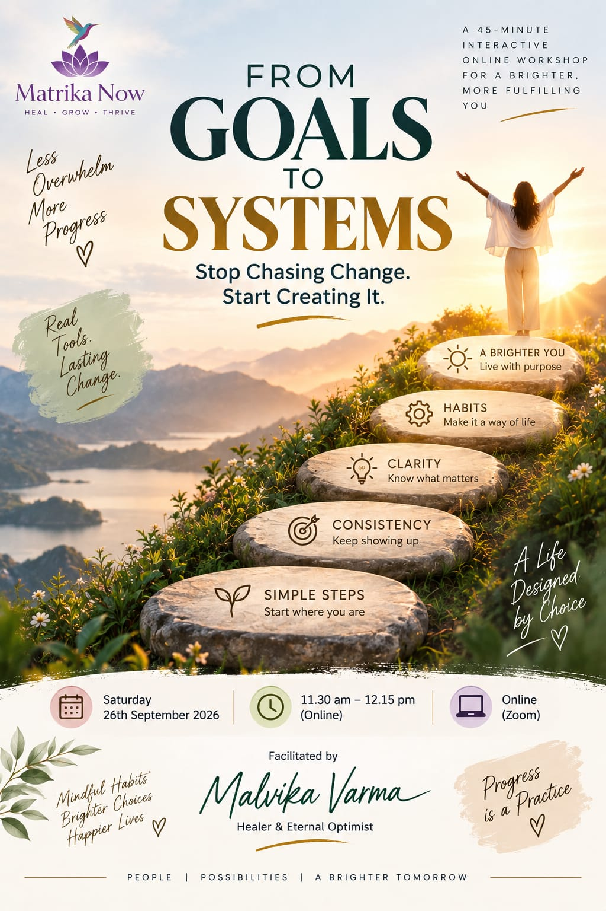

Discover your archetype
Your archetype is not your role. It is the lens through which you experience the world — shaping how you lead, relate, and respond under stress. At Matrika Now, archetypes are used as mirrors, not boxes.
Your last reflection:
Matrika Now, with Malvika Varma
and how you are meant to move through life
A living space of awareness, healing, and self-discovery — where healing, consciousness, and leadership are not separate paths, but expressions of the same inner intelligence, unfolding now.
Seven petals, seven Matrikas. Touch one to meet it.
Not loudly. Not all at once. Just a quiet sense that the way you are living and the way you are made have drifted apart.
None of this means something is wrong with you. More often, it means something in you is ready to be understood.
See what your archetype revealsTwo ways of seeing what is already true about you: the lens you look through, and the nature you were born with.
Your archetype is not your role. It is the lens through which you experience the world — shaping how you lead, relate, and respond under stress. At Matrika Now, archetypes are used as mirrors, not boxes.
Your last reflection:
From the ancient science of Ayurveda comes the understanding that each of us is born with a unique energetic constitution. The three doshas govern how your body functions, how your mind processes experience, and how you respond to the world.
Your last reflection:
When you understand your inner design, life stops feeling random.
Most of us spend years trying to become someone else — calmer, stronger, more disciplined, more like the people around us. The work here is quieter, and far more freeing. It begins by seeing what is already true about you:
This is not about fixing yourself. It is about remembering your original rhythm.
Whether you are seeking to heal, learn, or connect, we offer pathways to explore the depths of your inner self with compassion, curiosity, and care.
For moments that require depth, discretion, and clarity.
These sessions are designed for individuals navigating inner transitions that don't yet have language.
More about 1:1 workBecause coherence deepens in the presence of others.
Group work at Matrika Now is carefully held. You are not processed. You are not exposed. You are met.
More about group spaces and journeysClarity you can return to. Practices you can live.
Thoughtfully structured learning spaces that blend conceptual understanding, reflective inquiry, and embodied practice.
More about courses and learning containers
Tap the poster to see it full size
Stop chasing change. Start creating it.
This workshop has taken place. Would you like to hear about the next one?
As a compassionate guide and healer, I am here to walk beside you on your journey toward self-discovery and wholeness. My practice is rooted in the belief that healing begins with acceptance and kindness — embracing every aspect of our being, including the wounds we carry.
Read Malvika's storyThis work changed how I understand myself. Malvika holds a mirror without judgment — and what you see in it is actually freeing.
Malvika holds space unlike anyone I have ever encountered. The archetype work unlocked something I had been circling for years.
The dosha discovery was a revelation. Understanding my constitution explained so many patterns in my relationships and responses.
If you are wondering whether this is for you, you are in good company.
Not at all. You bring your life, your questions and your curiosity. The language and the frameworks are introduced gently, only as far as they are useful to you.
That is often the most honest place to begin. Many people arrive with a feeling rather than a goal — a restlessness, a heaviness, a sense of being out of step. Naming it is part of the work.
1:1 work suits moments that need depth and privacy. Group spaces suit those who grow through shared experience. Courses suit those who want structure they can return to at their own pace. If you are unsure, begin with a conversation.
The archetype and dosha reflections are short sets of questions that you answer in your browser. Your answers are not sent or stored anywhere; the result is simply a starting point for a conversation.
No. This work complements professional medical and psychological care; it does not replace it. If you are in crisis or managing a health condition, please continue to work with your doctor or therapist.
Reflections, practices, and invitations — curated by Malvika. No spam. Unsubscribe anytime.